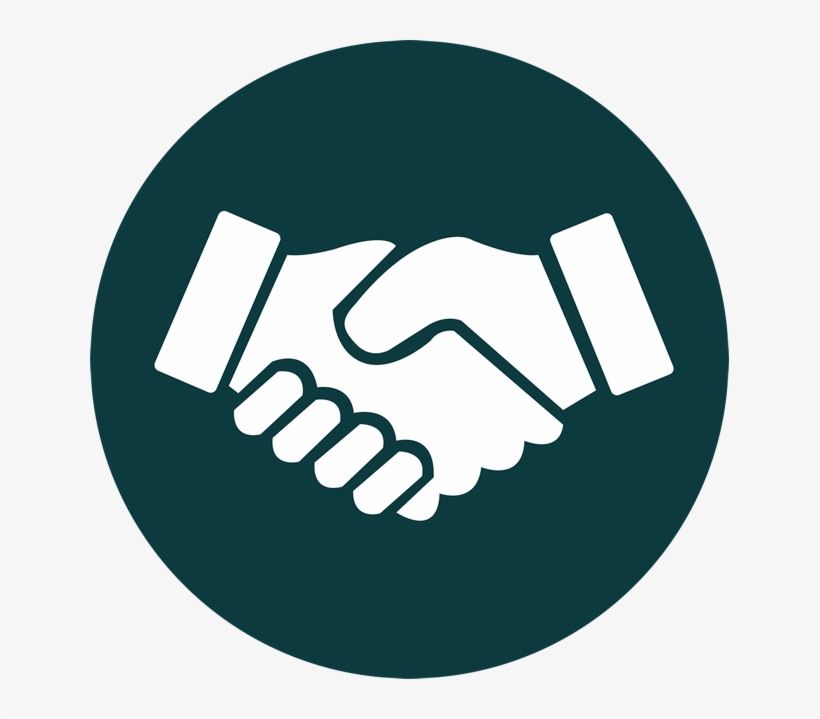
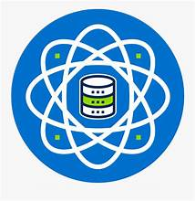

Senior Software Engineer (C#.NET)

Full time

London (remote-optional)
Software Development; Technical Leadership; System Architecture and Optimization
Learn More
3 open poitions

AI specialist
Full time
Prishtina
Problem Definition
Data Prep Model Development & Deployment
Monitoring & Collaboration
Learn More
2 open poitions

Technical Lead - Software Engineering (Frontend - ReactJS)
Full time
Ottawa
Frontend Architecture and Development; Team Collaboration and Mentorship; Technical Strategy and Innovation
Learn More
7 open poitions

Senior Software Engineer, UX/UI
Half time
Prishtina(remote-optional)
User-Centric Design; Prototyping and Testing; Design System Management
Learn More
11 open poitions
Senior Director, Enterprise Architecture
Full time
NY-550 W Jackson Blvd Suite
Strategic Technology Planning; Cross-Functional Collaboration; Governance and Standards
Learn More
4 open poitions

Senior Database Engineer
Full time
Prishtina
Database Design and Optimization, Data Security and Compliance; Database Administration and Monitoring
Learn More
2 open poitions

Senior DevOps Engineer
Full time
Prishtina(remote-optional)
Infrastructure Automation; Monitoring and Incident Response; Continuous Integration/Deployment (CI/CD)
Learn More
3 open poitions
Human Resources Business Partner
Full time
London
Strategic HR Planning; Employee Relations and Engagement; Talent Management and Development
Learn More
3 open poitions

Embedded Systems Engineer
Part time
Berlin
Embedded Software Development; Hardware-Software Integration; Embedded Systems Architecture
Learn More
5 open poitions

Blockchain Developer
Full time
Rotterdam
Smart Contract Development; Blockchain Network Development; Integration with Existing Systems
Learn More
1 open poition

Machine Learning Engineer
Full time
India(remote)
Algorithm Development and Implementation; Data Preprocessing; Model Evaluation
Learn More
3 open poitions
Cloud Solutions Architect
Full time
Prishtina
Cloud Architecture Design; Implementation and Migration; Consultation and Collaboration
Learn More
2 open poitions

CyberSecurity Engineer
Part time
Prishtina
Security Monitoring and Incident Response; Security Awareness and Training; Vulnerability Assessment
Learn More
1 open poition

Business Development Representative
Full time
Prishtina
Lead Generation; Client Engagement and Relationship Building; Sales Support and Collaboration
Learn More
3 open poitions

Senior Software Engineer (C++)
Full time
Prishtina
Software Development; Performance Optimization; Technical Leadership
Learn More
7 open poitions
Senior Software Engineer - Frontend
Full time
Prishtina
Frontend Development; Architecture and Scalability; Cross-Functional Collaboration
Learn More
3 open poitions
Full Stack Developer
Full time
Prishtina
Frontend Development; Backend Development; Database Management
Learn More
12 open poitions

Database Engineer
Full time
Prishtina
Database Management; Database Design and Optimization, Data Security and Compliance
Learn More
2 open poitions
Technical Support Executive
Full time
Prishtina
Customer Support and Issue Resolution; Knowledge Base Management; Customer Education
Learn More
1 open poition
Systems Administrator
Full time
Prishtina
Infrastructure Management; Security Administration; Troubleshooting and Technical Support
Learn More
3 open poitions

Network Engineer
Full time
Prishtina
Network Design and Implementation; Network Monitoring; Security and Access Control
Learn More
5 open poitions
Data Scientist
Full time
Prishtina
Data Analysis and Modeling; Data Preprocessing; Communication of Findings
Learn More
3 open poitions
Public Relations (PR) & Communications Strategist
Full time
Prishtina
Strategic Communication Planning; Media Relations and Outreach; Crisis Communication and Reputation Management
Learn More
8 open poitions

Quality Assurance Engineer
Full time
Prishtina
Test Planning and Strategy; Test Execution; Quality Assurance Process Improvement
Learn More
9 open poitions
Software Engineer
Full time
Prishtina
Software Development; Code Review and Quality Assurance; Problem Solving
Learn More
3 open poitions

Scrum Master
Full time
Prishtina
Facilitator of Scrum Processes; Servant Leadership; Continuous Improvements
Learn More
21 open poitions
The Opportunity: Hybrid Role:
Come join a relentless team of software engineers dedicated to helping the legal world collaborate on their strategic goals and identify new business opportunities within their existing clients. You will help grow our development team by participating in the full SDLC (Software Development Lifecycle) from preliminary system analysis to testing and deployment. This hybrid-engineering role includes building high quality and fully performing software that meets quality and software development standards alongside a great group of smart, motivated people, with a focus on customer delight.
A Day in the Life:
- Take ownership of product features from estimates to design and development
- Write clean, maintainable code that is extensible with minimum number of defects
- Refactor and improve existing software
- Collaborate with cross-functional teams (PM, QA) to complete tasks
- Manage individual task priorities, deadlines, and deliverables
- Provide guidance on modern software engineering techniques and methodologies for code reviews
- Coach and mentor less experienced team members
Role progression:
Within 1 month, you will:
- Complete our Engineering onboarding plan
- Meet the team and learn the details of our business, as well as where we are headed
- Familiarize yourself with our Software Development Life Cycle and our specific flavor of Scrum
- Participate in Scrum ceremonies
Within 6 months, you will:
- Contribute, as a fully integrated member of your Scrum team
- Complete assigned tasks within the given timeframe
- Write code that is readable, extensible, well commented, and that does not require multiple iterations to correct issues found by QA
- Require minimal supervision for assigned tasks
- Assist, guide, advise, and help team members:
- to complete their assignments within the given timeframe
Requirements About You:
6+ years experience in C#.NET
- Good knowledge of development using JS/React/CSS at a mid-senior level (4+ years)
- Good knowledge of development using PHP & Laravel at a mid-senior level (4+ years)
- Ability to work with legacy PHP & JS code
- Good understanding of design patterns and OOP concepts
- Good knowledge of building and extending REST APIs
- Good knowledge of SQL database design
- Knowledge of source control with Git, especially branching/merging as needed
- Familiar with Atlassian products – JIRA
- Familiarity with agile techniques
- Experience with unit/integration/acceptance tests
Add your CV
Close
The Opportunity: Hybrid Role:
Job Opportunity: AI Specialist
Join our dynamic team of AI specialists committed to pushing the boundaries
of artificial intelligence and its applications. As an AI specialist, you will
play a pivotal role in advancing our AI initiatives, contributing to the
development of cutting-edge solutions, and collaborating with cross-functional teams.
This hybrid role involves engaging in the entire AI project lifecycle,
from conceptualization to deployment, with a strong emphasis on innovation and delivering value to our clients
A Day in the Life:
- Take ownership of AI projects, from conceptualization to design and implementation.
- Develop clean, efficient, and scalable AI models and algorithms
- Write high-quality, maintainable code for AI applications.
- Collaborate with cross-functional teams, including product managers and quality assurance, to ensure the successful completion of AI projects.
- Develop clean, efficient, and scalable AI models and algorithms.
- Provide guidance on modern AI techniques and methodologies during code reviews.
- Manage individual task priorities, deadlines, and deliverables within the AI development lifecycle.
Role progression:
Within 1 month, you will:
- Complete the AI onboarding program
- Familiarize yourself with our AI projects, team dynamics, and business objectives.
- Understand the AI development lifecycle and our specific project management methodologies.
- Contribute significantly to AI projects, demonstrating a deep understanding of AI concepts and technologies.
- Complete assigned AI tasks within given timeframes.
- Develop AI solutions that are innovative, well-documented, and align with project requirements.
- Provide mentorship and assistance to team members, fostering a collaborative and growth-oriented team culture.
Requirements About You:
- 6+ years of experience in AI development.
- Proficient in programming languages such as Python and/or Java for AI applications.
- Solid understanding of machine learning, deep learning, and natural language processing.
- Experience with popular AI frameworks and libraries (e.g., TensorFlow, PyTorch).
- Familiarity with cloud-based AI services (e.g., AWS, Azure, Google Cloud).
- Strong knowledge of data preprocessing, feature engineering, and model evaluation.
- Excellent problem-solving skills and ability to work independently or collaboratively
- Familiarity with agile methodologies and project management tools.
Add your CV
Close
The Opportunity: Hybrid Role
Job Opportunity: Technical Lead - Software Engineering (Frontend - ReactJS)
Join our dynamic team of software engineers as a Technical Lead, specializing in Frontend development with ReactJS. As a Technical Lead, you will be a key player in driving the technical direction of our software projects, with a focus on frontend innovation and excellence. This hybrid role entails leading a team through the entire software development lifecycle, from ideation to deployment, with a strong emphasis on delivering high-quality solutions and exceeding client expectations.
A Day in the Life:
- Take ownership of frontend projects, guiding the team from conceptualization to design and implementation.
- Lead the development of clean, efficient, and user-friendly interfaces using ReactJS.
- Write high-quality, maintainable code for frontend applications.
- Collaborate closely with cross-functional teams, including backend developers and quality assurance, to ensure seamless project delivery.
- Provide technical guidance and mentorship to the frontend development team.
- Manage individual and team task priorities, deadlines, and deliverables within the software development lifecycle.
Role Progression:
Within 1 month, you will:
- Complete the onboarding program, gaining a deep understanding of our software projects, team dynamics, and business objectives.
- Familiarize yourself with the frontend development lifecycle and our specific project management methodologies.
Within 6 months, you will:
- Lead frontend projects, demonstrating a deep understanding of ReactJS and frontend technologies.
- Successfully guide the team in completing frontend tasks within specified timeframes.
- Develop frontend solutions that are innovative, well-documented, and align with project requirements.
- Provide mentorship and assistance to team members, fostering a collaborative and growth-oriented team culture.
Requirements About You:
- 8+ years of experience in software engineering with a focus on frontend development using ReactJS.
- Expertise in JavaScript, HTML, CSS, and other relevant frontend technologies.
- Demonstrated leadership experience, guiding teams through successful frontend project deliveries.
- Familiarity with agile methodologies and project management tools.
- Strong problem-solving skills and the ability to work independently or collaboratively.
Add your CV
Close
The Opportunity: Hybrid Role
Job Opportunity: Senior Database Engineer
Join our dynamic team as a Senior Database Engineer, playing a crucial role in shaping the architecture and performance of our database systems. As a Senior Database Engineer, you will be at the forefront of designing, implementing, and optimizing database solutions to meet the evolving needs of our organization. This hybrid role involves active participation in the complete database development lifecycle, from design to deployment, with a focus on innovation and ensuring the integrity and efficiency of our data systems.
A Day in the Life:
- Lead the design, implementation, and maintenance of high-performance database systems.
- Optimize database performance, ensuring responsiveness, reliability, and scalability.
- Collaborate closely with cross-functional teams, including software engineers and system administrators, to align database solutions with overall system architecture.
- Troubleshoot and resolve complex database issues, ensuring minimal downtime and data integrity.
- Implement and enforce security best practices for database systems.
- Mentor and guide junior database engineers, fostering a culture of knowledge-sharing and collaboration.
- Manage individual and team priorities, deadlines, and deliverables within the database development lifecycle.
Role Progression:
Within 1 month, you will:
- Complete the onboarding program, gaining insights into our database systems, team dynamics, and business objectives.
- Familiarize yourself with our specific database development lifecycle and project management methodologies.
Within 6 months, you will:
- Lead major database initiatives, demonstrating a deep understanding of database technologies and best practices.
- Successfully guide the team in implementing and optimizing database solutions within specified timeframes.
- Implement and enforce security measures, ensuring the confidentiality and integrity of our data.
- Provide mentorship and assistance to team members, fostering a collaborative and growth-oriented team culture.
Requirements About You:
- 8+ years of experience as a Database Engineer, with a focus on designing and optimizing database systems.
- Expertise in database technologies such as SQL Server, MySQL, or PostgreSQL.
- Demonstrated leadership experience in leading database projects and initiatives.
- Strong understanding of database security, performance tuning, and optimization.
- Experience with cloud-based databases (e.g., AWS RDS, Azure SQL Database).
- Familiarity with agile methodologies and project management tools.
- Excellent problem-solving skills and the ability to work independently or collaboratively.
Add your CV
Close
The Opportunity: Technical Leadership Role
Job Opportunity: Senior Database Engineer
We're on the lookout for a seasoned and skilled Senior Database Engineer to join our dynamic team. As a Senior Database Engineer, you will play a crucial role in designing, implementing, and optimizing our database systems. This is a leadership position where you will lead initiatives to enhance data management, performance, and scalability. If you're passionate about database technologies and ready to take on a senior role in shaping our data infrastructure, we want to hear from you.
A Day in the Life:
- Lead the design and implementation of high-performance database systems.
- Optimize and maintain database performance, ensuring responsiveness, reliability, and scalability.
- Collaborate closely with cross-functional teams, including software engineers and system administrators, to align database solutions with overall system architecture.
- Troubleshoot and resolve complex database issues, ensuring minimal downtime and data integrity.
- Implement and enforce security best practices for database systems.
- Mentor and guide junior database engineers, fostering a culture of knowledge-sharing and collaboration.
- Manage individual and team priorities, deadlines, and deliverables within the database development lifecycle.
Role Progression:
Within 1 month, you will:
- Complete the onboarding program, gaining insights into our database systems, team dynamics, and business objectives.
- Familiarize yourself with our specific database development lifecycle and project management methodologies.
Within 6 months, you will:
- Lead major database initiatives, demonstrating a deep understanding of database technologies and best practices.
- Successfully guide the team in implementing and optimizing database solutions within specified timeframes.
- Implement and enforce security measures, ensuring the confidentiality and integrity of our data.
- Provide mentorship and assistance to team members, fostering a collaborative and growth-oriented team culture.
Requirements About You:
- 8+ years of experience as a Database Engineer, with a focus on designing and optimizing database systems.
- Expertise in database technologies such as SQL Server, MySQL, or PostgreSQL.
- Demonstrated leadership experience in leading database projects and initiatives.
- Strong understanding of database security, performance tuning, and optimization.
- Experience with cloud-based databases (e.g., AWS RDS, Azure SQL Database).
- Familiarity with agile methodologies and project management tools.
- Excellent problem-solving skills and the ability to work independently or collaboratively.
Add your CV
Close
The Opportunity: Leadership Role
Job Opportunity: Senior Director, Enterprise Architecture
We are seeking an experienced and visionary leader to join our organization as the Senior Director of Enterprise Architecture. In this pivotal role, you will play a key part in shaping the technology landscape of our organization, driving strategic initiatives, and ensuring alignment between business goals and IT solutions. As the Senior Director of Enterprise Architecture, you will lead a team of talented architects in defining and implementing scalable, innovative, and secure enterprise-wide solutions, contributing significantly to the success and growth of our organization.
A Day in the Life:
- Lead the development and implementation of the enterprise-wide technology strategy and architecture.
- Collaborate closely with C-level executives, business leaders, and IT teams to align technology solutions with business objectives.
- Define and enforce architectural standards, ensuring consistency, scalability, and security across all IT projects.
- Oversee the evaluation and adoption of new technologies, driving innovation and continuous improvement.
- Mentor and guide a team of architects, fostering a culture of excellence, collaboration, and professional growth.
- Provide strategic direction on major IT initiatives, ensuring they align with the overall enterprise architecture.
- Manage individual and team priorities, deadlines, and deliverables within the enterprise architecture domain.
Role Progression:
Within 1 month, you will:
- Complete the onboarding program, gaining insights into our organization's structure, culture, and business objectives.
- Familiarize yourself with the existing enterprise architecture, ongoing projects, and team dynamics.
Within 6 months, you will:
- Lead strategic initiatives, demonstrating a deep understanding of enterprise architecture principles and best practices.
- Mentor and guide your team to achieve architectural excellence in project deliveries.
- Drive the implementation of innovative solutions that enhance the overall efficiency and effectiveness of our technology landscape.
- Collaborate with key stakeholders to align technology strategies with business goals.
Requirements About You:
- 12+ years of experience in IT, with a focus on enterprise architecture and leadership roles.
- Demonstrated experience in defining and implementing enterprise-wide technology strategies.
- Strong leadership and people management skills, with a proven ability to mentor and develop high-performing teams.
- Expertise in enterprise architecture frameworks (e.g., TOGAF) and best practices.
- Experience working closely with C-level executives and influencing technology decisions at the highest organizational level.
- Familiarity with agile methodologies and project management tools.
- Excellent strategic thinking, problem-solving, and communication skills.
Add your CV
Close
The Opportunity: Technical Leadership Role
Job Opportunity: Senior DevOps Engineer
We are in search of an experienced and accomplished Senior DevOps Engineer to join our innovative team. As a Senior DevOps Engineer, you will lead the charge in designing, implementing, and automating our infrastructure and deployment processes. This role is ideal for someone with a passion for streamlining operations, optimizing performance, and ensuring the reliability of our systems. If you're ready to take on a senior role in shaping our DevOps practices, we want to hear from you.
A Day in the Life:
- Lead the design and implementation of scalable and automated infrastructure solutions.
- Collaborate with development and operations teams to integrate DevOps practices into the software development lifecycle.
- Implement and manage CI/CD pipelines for efficient and reliable software delivery.
- Automate manual processes, reducing deployment times and improving system efficiency.
- Ensure the security, reliability, and performance of production and development environments.
- Mentor and guide junior DevOps engineers, fostering a culture of continuous improvement and knowledge-sharing.
- Manage individual and team priorities, deadlines, and deliverables within the DevOps domain.
Role Progression:
Within 1 month, you will:
- Complete the onboarding program, gaining insights into our infrastructure, team dynamics, and business objectives.
- Familiarize yourself with our specific DevOps practices, tools, and ongoing projects.
Within 6 months, you will:
- Lead major DevOps initiatives, demonstrating a deep understanding of DevOps principles and best practices.
- Successfully guide the team in implementing and optimizing infrastructure solutions within specified timeframes.
- Implement and enforce security measures, ensuring the confidentiality and integrity of our systems.
- Provide mentorship and assistance to team members, fostering a collaborative and growth-oriented team culture.
Requirements About You:
- 8+ years of experience as a DevOps Engineer, with a focus on designing and automating infrastructure.
- Expertise in CI/CD tools, containerization (Docker, Kubernetes), and infrastructure as code (Terraform, Ansible).
- Demonstrated leadership experience in leading DevOps projects and initiatives.
- Strong understanding of cloud platforms (AWS, Azure, GCP).
- Familiarity with monitoring and logging tools for system analysis and troubleshooting.
- Familiarity with agile methodologies and project management tools.
- Excellent problem-solving skills and the ability to work independently or collaboratively.
Add your CV
Close
The Opportunity: Strategic HR Leadership Role
Job Opportunity: Human Resources Business Partner
We are seeking a dynamic and strategic Human Resources Business Partner to join our team. As an HR Business Partner, you will play a pivotal role in aligning human resources strategies with business objectives. This is a leadership position where you will collaborate with business leaders to drive HR initiatives, foster a positive workplace culture, and contribute to the overall success of our organization. If you are passionate about people, organizational development, and driving HR excellence, we want to hear from you.
A Day in the Life:
- Collaborate with business leaders to understand organizational goals and develop HR strategies that support them.
- Provide strategic guidance on talent acquisition, employee relations, performance management, and workforce planning.
- Lead initiatives to enhance employee engagement, retention, and professional development.
- Partner with management to address employee relations issues and ensure a positive and inclusive workplace environment.
- Conduct regular assessments of organizational and departmental needs to inform HR programs and policies.
- Serve as a key point of contact for employees, providing guidance on HR policies, benefits, and career development.
- Manage individual and team priorities, deadlines, and deliverables within the HR domain.
Role Progression:
Within 1 month, you will:
- Complete the onboarding program, gaining insights into our organizational structure, culture, and business objectives.
- Familiarize yourself with our specific HR policies, programs, and ongoing projects.
Within 6 months, you will:
- Lead HR initiatives, demonstrating a deep understanding of HR principles and best practices.
- Successfully partner with business leaders to implement HR strategies that positively impact the organization.
- Contribute to the development and implementation of HR policies and programs.
- Provide mentorship and assistance to HR team members, fostering a collaborative and growth-oriented team culture.
Requirements About You:
- 8+ years of experience in human resources, with a focus on strategic HR business partnering.
- Demonstrated leadership experience in aligning HR strategies with organizational goals.
- Strong understanding of talent acquisition, employee relations, performance management, and workforce planning.
- Excellent communication and interpersonal skills, with the ability to build effective relationships at all levels of the organization.
- Experience with HRIS systems and familiarity with HR compliance and labor laws.
- Familiarity with agile methodologies and project management tools.
- Excellent problem-solving skills and the ability to work independently or collaboratively.
Add your CV
Close
The Opportunity: Embedded Systems Engineer
Job Opportunity: Embedded Systems Engineer
We're searching for a talented and innovative Embedded Systems Engineer to join our dynamic team. As an Embedded Systems Engineer, you will be at the forefront of designing and developing embedded solutions that power our cutting-edge products. If you have a passion for embedded systems, hardware design, and firmware development, we want to hear from you. Join us and contribute to the creation of innovative technologies that make a significant impact.
A Day in the Life:
- Participate in the design and development of embedded systems for our products.
- Collaborate with cross-functional teams, including hardware engineers and software developers, to integrate embedded solutions into overall product architecture.
- Develop and optimize firmware for embedded systems, ensuring reliability, efficiency, and scalability.
- Conduct hardware and software debugging, troubleshooting, and performance testing.
- Work on low-level programming, interfacing with sensors, and implementing communication protocols.
- Mentor and guide junior engineers, fostering a culture of knowledge-sharing and innovation.
- Manage individual and team priorities, deadlines, and deliverables within the embedded systems domain.
Role Progression:
Within 1 month, you will:
- Complete the onboarding program, gaining insights into our organization's structure, culture, and ongoing projects.
- Familiarize yourself with our specific embedded systems development lifecycle and project management methodologies.
Within 6 months, you will:
- Lead embedded systems projects, demonstrating a deep understanding of embedded systems design and development.
- Successfully guide the team in implementing and optimizing embedded solutions within specified timeframes.
- Contribute to the evaluation and adoption of new technologies to enhance embedded systems capabilities.
- Provide mentorship and assistance to team members, fostering a collaborative and growth-oriented team culture.
Requirements About You:
- 5+ years of experience as an Embedded Systems Engineer, with a focus on hardware design and firmware development.
- Expertise in C/C++ programming for embedded systems.
- Experience with microcontrollers, microprocessors, and embedded system architectures.
- Knowledge of communication protocols such as SPI, I2C, UART, and experience with wireless communication technologies.
- Familiarity with hardware debugging tools and oscilloscopes.
- Experience with version control systems (e.g., Git).
- Familiarity with agile methodologies and project management tools.
- Excellent problem-solving skills and the ability to work independently or collaboratively.
Add your CV
Close
The Opportunity: Blockchain Developer
Job Opportunity: Blockchain Developer
Join our dynamic team as a Blockchain Developer and be at the forefront of revolutionizing the way we interact with technology. As a Blockchain Developer, you will play a pivotal role in designing, implementing, and maintaining blockchain solutions that power our innovative projects. If you have a passion for blockchain technology, decentralized applications, and smart contract development, we want to hear from you. Embark on a journey with us to create cutting-edge blockchain solutions that drive our organization to new heights.
A Day in the Life:
- Design and develop blockchain solutions, including smart contracts and decentralized applications (DApps).
- Collaborate with cross-functional teams, including front-end and back-end developers, to integrate blockchain technology into overall system architecture.
- Implement and optimize smart contracts on blockchain platforms such as Ethereum, Binance Smart Chain, or others.
- Conduct blockchain research, staying abreast of the latest technologies, trends, and security measures.
- Participate in code reviews and contribute to the development of blockchain-related projects.
- Mentor and guide junior developers interested in blockchain technology.
- Manage individual and team priorities, deadlines, and deliverables within the blockchain development domain.
Role Progression:
Within 1 month, you will:
- Complete the onboarding program, gaining insights into our organization's structure, culture, and ongoing blockchain projects.
- Familiarize yourself with our specific blockchain development lifecycle and project management methodologies.
Within 6 months, you will:
- Lead blockchain development projects, demonstrating a deep understanding of blockchain technologies and best practices.
- Successfully guide the team in implementing and optimizing blockchain solutions within specified timeframes.
- Contribute to the evaluation and adoption of new blockchain technologies to enhance our capabilities.
- Provide mentorship and assistance to team members, fostering a collaborative and growth-oriented team culture.
Requirements About You:
- 3+ years of experience as a Blockchain Developer, with a focus on smart contract development and DApps.
- Proficiency in programming languages used in blockchain development, such as Solidity.
- Experience with popular blockchain platforms like Ethereum, Binance Smart Chain, or others.
- Knowledge of blockchain development frameworks and tools.
- Familiarity with decentralized finance (DeFi) concepts and protocols.
- Experience with version control systems (e.g., Git).
- Familiarity with agile methodologies and project management tools.
- Excellent problem-solving skills and the ability to work independently or collaboratively.
Add your CV
Close
The Opportunity: Machine Learning Engineer
Job Opportunity: Machine Learning Engineer
We are looking for a talented and enthusiastic Machine Learning Engineer to join our innovative team. As a Machine Learning Engineer, you will be at the forefront of developing and implementing machine learning solutions that drive our projects to new heights. If you have a passion for artificial intelligence, data science, and building intelligent systems, we want to hear from you. Join us in shaping the future of technology through cutting-edge machine learning applications.
A Day in the Life:
- Design and develop machine learning models and algorithms for various applications.
- Collaborate with cross-functional teams, including data scientists and software engineers, to integrate machine learning solutions into overall system architecture.
- Conduct exploratory data analysis, feature engineering, and model evaluation.
- Implement and deploy machine learning models in production environments.
- Stay up-to-date with the latest advancements in machine learning and artificial intelligence.
- Mentor and guide junior data scientists and machine learning engineers.
- Manage individual and team priorities, deadlines, and deliverables within the machine learning domain.
Role Progression:
Within 1 month, you will:
- Complete the onboarding program, gaining insights into our organization's structure, culture, and ongoing machine learning projects.
- Familiarize yourself with our specific machine learning development lifecycle and project management methodologies.
Within 6 months, you will:
- Lead machine learning projects, demonstrating a deep understanding of machine learning concepts and best practices.
- Successfully guide the team in implementing and optimizing machine learning solutions within specified timeframes.
- Contribute to the evaluation and adoption of new machine learning technologies to enhance our capabilities.
- Provide mentorship and assistance to team members, fostering a collaborative and growth-oriented team culture.
Requirements About You:
- 3+ years of experience as a Machine Learning Engineer, with a focus on model development and deployment.
- Strong proficiency in machine learning frameworks and libraries (e.g., TensorFlow, PyTorch, scikit-learn).
- Experience with data preprocessing, feature engineering, and model evaluation.
- Knowledge of deep learning concepts and architectures.
- Experience with deploying machine learning models in production environments.
- Familiarity with version control systems (e.g., Git).
- Familiarity with agile methodologies and project management tools.
- Excellent problem-solving skills and the ability to work independently or collaboratively.
Add your CV
Close
The Opportunity: Cloud Solutions Architect
Job Opportunity: Cloud Solutions Architect
Join our dynamic team as a Cloud Solutions Architect and play a crucial role in shaping the architecture and performance of our cloud solutions. As a Cloud Solutions Architect, you will be at the forefront of designing and implementing scalable and innovative cloud-based systems. If you have a passion for cloud technologies, infrastructure design, and optimizing system performance, we want to hear from you. Help us build cutting-edge solutions that leverage the power of the cloud to drive our organization's success.
A Day in the Life:
- Lead the design and implementation of cloud solutions architecture for our projects.
- Collaborate with cross-functional teams, including software engineers and system administrators, to integrate cloud solutions into overall system architecture.
- Conduct cloud assessments and provide recommendations for optimizing performance, scalability, and cost efficiency.
- Implement and manage infrastructure as code (IaC) for efficient and reproducible deployments.
- Stay up-to-date with the latest advancements in cloud technologies and best practices.
- Mentor and guide junior cloud engineers, fostering a culture of knowledge-sharing and innovation.
- Manage individual and team priorities, deadlines, and deliverables within the cloud solutions domain.
Role Progression:
Within 1 month, you will:
- Complete the onboarding program, gaining insights into our organization's structure, culture, and ongoing cloud projects.
- Familiarize yourself with our specific cloud solutions development lifecycle and project management methodologies.
Within 6 months, you will:
- Lead major cloud initiatives, demonstrating a deep understanding of cloud technologies and best practices.
- Successfully guide the team in implementing and optimizing cloud solutions within specified timeframes.
- Contribute to the evaluation and adoption of new cloud technologies to enhance our capabilities.
- Provide mentorship and assistance to team members, fostering a collaborative and growth-oriented team culture.
Requirements About You:
- 5+ years of experience as a Cloud Solutions Architect, with a focus on designing and optimizing cloud-based systems.
- Expertise in cloud platforms such as AWS, Azure, or Google Cloud.
- Demonstrated experience with infrastructure as code (IaC) tools like Terraform or CloudFormation.
- Strong understanding of containerization and orchestration tools (e.g., Docker, Kubernetes).
- Experience with serverless computing and microservices architecture.
- Familiarity with security best practices for cloud environments.
- Familiarity with agile methodologies and project management tools.
- Excellent problem-solving skills and the ability to work independently or collaboratively.
Add your CV
Close
The Opportunity: Cybersecurity Engineer
Job Opportunity: Cybersecurity Engineer
We are seeking a skilled and proactive Cybersecurity Engineer to join our dedicated team. As a Cybersecurity Engineer, you will play a critical role in safeguarding our organization's systems and data from cyber threats. If you have a passion for cybersecurity, ethical hacking, and ensuring the confidentiality and integrity of information, we want to hear from you. Join us in the mission to create a secure and resilient technology environment.
A Day in the Life:
- Lead the development and implementation of cybersecurity strategies and solutions.
- Conduct vulnerability assessments and penetration testing to identify and address security weaknesses.
- Collaborate with cross-functional teams to design and implement security controls for systems and applications.
- Monitor security incidents, conduct investigations, and implement incident response measures.
- Stay abreast of the latest cybersecurity threats and technologies to ensure proactive defense measures.
- Mentor and guide junior cybersecurity professionals, fostering a culture of continuous improvement and knowledge-sharing.
- Manage individual and team priorities, deadlines, and deliverables within the cybersecurity domain.
Role Progression:
Within 1 month, you will:
- Complete the onboarding program, gaining insights into our organization's structure, culture, and ongoing cybersecurity initiatives.
- Familiarize yourself with our specific cybersecurity protocols, systems, and ongoing projects.
Within 6 months, you will:
- Lead major cybersecurity initiatives, demonstrating a deep understanding of cybersecurity principles and best practices.
- Successfully guide the team in implementing and optimizing cybersecurity solutions within specified timeframes.
- Contribute to the development and enhancement of cybersecurity policies and procedures.
- Provide mentorship and assistance to team members, fostering a collaborative and growth-oriented team culture.
Requirements About You:
- 5+ years of experience as a Cybersecurity Engineer, with a focus on vulnerability assessments, penetration testing, and incident response.
- Expertise in cybersecurity tools and technologies, including SIEM, IDS/IPS, antivirus solutions, and firewall management.
- Certifications such as CISSP, CISM, or CEH are highly desirable.
- Experience with security frameworks and standards (e.g., NIST, ISO 27001).
- Strong understanding of networking protocols and security architectures.
- Familiarity with ethical hacking and threat modeling.
- Familiarity with agile methodologies and project management tools.
- Excellent problem-solving skills and the ability to work independently or collaboratively.
Add your CV
Close
The Opportunity: Business Development Representative
Job Opportunity: Business Development Representative
Join our dynamic team as a Business Development Representative (BDR) and be a key player in driving the growth and success of our organization. As a BDR, you will play a crucial role in identifying and nurturing business opportunities, building relationships with potential clients, and contributing to our sales pipeline. If you have a passion for sales, excellent communication skills, and the drive to excel in a fast-paced environment, we want to hear from you. Take the next step in your career with us and be a part of our exciting journey.
A Day in the Life:
- Conduct outbound prospecting to identify and qualify potential leads through various channels.
- Initiate contact with potential clients through calls, emails, and social media to understand their needs and introduce our products/services.
- Collaborate with the sales team to develop and execute targeted outreach campaigns.
- Maintain accurate and up-to-date records of prospect interactions in the CRM system.
- Schedule and coordinate meetings or demos between potential clients and the sales team.
- Stay informed about industry trends, market conditions, and competitor activities.
- Maintain a high level of product and industry knowledge to effectively communicate value propositions to potential clients.
Role Progression:
Within 1 month, you will:
- Complete the onboarding program, gaining insights into our organization's products/services, culture, and sales processes.
- Familiarize yourself with our CRM system and sales tools.
Within 6 months, you will:
- Independently manage and prioritize your prospecting activities to meet or exceed assigned targets.
- Build and nurture strong relationships with potential clients, guiding them through the early stages of the sales funnel.
- Contribute to the development of targeted outreach strategies and campaigns.
- Collaborate effectively with the sales team to hand off qualified leads and support the overall sales process.
Requirements About You:
- 1-2 years of experience in business development, sales, or a related field.
- Excellent communication and interpersonal skills, with the ability to engage potential clients effectively.
- Proven ability to work in a fast-paced and target-driven environment.
- Familiarity with CRM systems and sales tools.
- Adaptability and a willingness to learn about our products/services and industry.
- Self-motivated and goal-oriented with a strong work ethic.
- Familiarity with agile methodologies and project management tools.
- Bachelor’s degree in Business, Marketing, or a related field is a plus.
Add your CV
Close
The Opportunity: Senior Software Engineer (C++)
Job Opportunity: Senior Software Engineer (C++)
We are seeking a talented and experienced Senior Software Engineer with expertise in C++ to join our dynamic team. As a Senior Software Engineer, you will play a key role in the design, development, and optimization of our software solutions. If you have a passion for building robust and scalable software applications and are well-versed in C++, we want to hear from you. Join us and contribute to the success of our cutting-edge projects.
A Day in the Life:
- Lead the design and development of complex software features using C++.
- Collaborate with cross-functional teams, including product managers and fellow engineers, to define requirements and specifications.
- Conduct code reviews, provide constructive feedback, and ensure high code quality and maintainability.
- Optimize existing software for performance, scalability, and efficiency.
- Mentor and guide junior engineers, fostering a culture of technical excellence and knowledge-sharing.
- Manage individual and team priorities, deadlines, and deliverables within the software engineering domain.
Role Progression:
Within 1 month, you will:
- Complete the onboarding program, gaining insights into our organization's structure, culture, and ongoing projects.
- Familiarize yourself with our specific software development processes and coding standards.
Within 6 months, you will:
- Lead major software engineering initiatives, demonstrating a deep understanding of C++ and software architecture.
- Successfully guide the team in implementing and optimizing software solutions within specified timeframes.
- Contribute to the improvement of development processes and methodologies.
- Provide mentorship and assistance to team members, fostering a collaborative and growth-oriented team culture.
Requirements About You:
- 8+ years of experience as a Software Engineer, with a strong focus on C++ development.
- Proven experience in designing and developing complex, scalable software solutions.
- Expertise in data structures, algorithms, and object-oriented design principles.
- Experience with multi-threading, performance optimization, and memory management in C++ applications.
- Familiarity with software development best practices, including code reviews, unit testing, and version control.
- Strong problem-solving skills and the ability to work independently or collaboratively.
- Familiarity with agile methodologies and project management tools.
- Bachelor’s or Master’s degree in Computer Science or a related field.
Add your CV
Close
The Opportunity: Senior Software Engineer - Frontend
Job Opportunity: Senior Software Engineer - Frontend
We are looking for a highly skilled and motivated Senior Software Engineer with expertise in frontend technologies to join our innovative team. As a Senior Software Engineer - Frontend, you will be instrumental in designing, developing, and optimizing our user interfaces. If you have a passion for creating seamless and intuitive user experiences and are proficient in frontend technologies, we want to hear from you. Join us and contribute to the success of our cutting-edge projects.
A Day in the Life:
- Lead the design and development of complex frontend features, ensuring a seamless user experience.
- Collaborate with UX/UI designers and backend engineers to implement responsive and visually appealing user interfaces.
- Conduct code reviews, provide constructive feedback, and ensure high code quality and maintainability.
- Optimize frontend applications for performance, scalability, and responsiveness.
- Mentor and guide junior frontend engineers, fostering a culture of technical excellence and knowledge-sharing.
- Stay abreast of the latest trends and best practices in frontend development.
- Manage individual and team priorities, deadlines, and deliverables within the frontend development domain.
Role Progression:
Within 1 month, you will:
- Complete the onboarding program, gaining insights into our organization's structure, culture, and ongoing projects.
- Familiarize yourself with our specific frontend development processes, coding standards, and design principles.
Within 6 months, you will:
- Lead major frontend development initiatives, demonstrating a deep understanding of frontend technologies and best practices.
- Successfully guide the team in implementing and optimizing frontend solutions within specified timeframes.
- Contribute to the improvement of frontend development processes and methodologies.
- Provide mentorship and assistance to team members, fostering a collaborative and growth-oriented team culture.
Requirements About You:
- 8+ years of experience as a Frontend Software Engineer, with a focus on web application development.
- Expertise in modern frontend frameworks such as React, Angular, or Vue.js.
- Strong proficiency in HTML, CSS, and JavaScript.
- Experience with state management libraries (e.g., Redux) and component-based architecture.
- Familiarity with frontend build tools, package managers, and version control systems.
- Experience with responsive design and cross-browser compatibility.
- Strong problem-solving skills and the ability to work independently or collaboratively.
- Familiarity with agile methodologies and project management tools.
- Bachelor’s or Master’s degree in Computer Science or a related field.
Add your CV
Close
The Opportunity: Full Stack Developer
Job Opportunity: Full Stack Developer
Join our dynamic team as a Full Stack Developer and contribute to the end-to-end development of our innovative projects. As a Full Stack Developer, you will be involved in both frontend and backend development, playing a crucial role in creating scalable and high-performance applications. If you have a passion for full-stack development, a strong understanding of web technologies, and a desire to work on diverse and challenging projects, we want to hear from you. Join us and make a significant impact on our technology initiatives.
A Day in the Life:
- Lead the design and development of scalable and responsive web applications.
- Collaborate with UX/UI designers to implement visually appealing and intuitive user interfaces.
- Develop server-side logic, databases, and APIs to support frontend functionality.
- Conduct code reviews, provide constructive feedback, and ensure high code quality and maintainability.
- Optimize applications for performance, scalability, and responsiveness.
- Maintain awareness of the latest trends and best practices in full-stack development.
- Mentor and guide junior developers, fostering a culture of technical excellence and knowledge-sharing.
- Manage individual and team priorities, deadlines, and deliverables within the full-stack development domain.
Role Progression:
Within 1 month, you will:
- Complete the onboarding program, gaining insights into our organization's structure, culture, and ongoing projects.
- Familiarize yourself with our specific full-stack development processes, coding standards, and design principles.
Within 6 months, you will:
- Lead major full-stack development initiatives, demonstrating a deep understanding of both frontend and backend technologies.
- Successfully guide the team in implementing and optimizing full-stack solutions within specified timeframes.
- Contribute to the improvement of full-stack development processes and methodologies.
- Provide mentorship and assistance to team members, fostering a collaborative and growth-oriented team culture.
Requirements About You:
- 5+ years of experience as a Full Stack Developer, with proficiency in both frontend and backend technologies.
- Expertise in frontend frameworks such as React, Angular, or Vue.js.
- Strong proficiency in server-side languages such as Node.js, Python, or Ruby.
- Experience with databases (SQL and NoSQL), RESTful APIs, and server-side architecture.
- Familiarity with version control systems (e.g., Git) and build tools.
- Experience with cloud platforms (e.g., AWS, Azure, or Google Cloud).
- Strong problem-solving skills and the ability to work independently or collaboratively.
- Familiarity with agile methodologies and project management tools.
- Bachelor’s or Master’s degree in Computer Science or a related field.
Add your CV
Close
The Opportunity: Database Engineer
Job Opportunity: Database Engineer
Join our dynamic team as a Database Engineer and contribute to the design, implementation, and optimization of our database systems. As a Database Engineer, you will play a crucial role in ensuring the efficiency, security, and scalability of our data infrastructure. If you have a passion for database technologies, a strong understanding of data management, and a desire to work on diverse and challenging projects, we want to hear from you. Join us and make a significant impact on our data-driven initiatives.
A Day in the Life:
- Lead the design and implementation of database systems, considering performance, scalability, and security requirements.
- Collaborate with software engineers to define database schema, tables, and relationships.
- Optimize database performance through indexing, query optimization, and other performance-tuning techniques.
- Implement and manage database security measures, including access controls and encryption.
- Conduct regular backups, recovery, and ensure data integrity and availability.
- Stay informed about the latest trends and best practices in database management.
- Mentor and guide junior database engineers, fostering a culture of technical excellence and knowledge-sharing.
- Manage individual and team priorities, deadlines, and deliverables within the database engineering domain.
Role Progression:
Within 1 month, you will:
- Complete the onboarding program, gaining insights into our organization's structure, culture, and ongoing projects.
- Familiarize yourself with our specific database engineering processes, coding standards, and design principles.
Within 6 months, you will:
- Lead major database engineering initiatives, demonstrating a deep understanding of database technologies and best practices.
- Successfully guide the team in implementing and optimizing database solutions within specified timeframes.
- Contribute to the improvement of database engineering processes and methodologies.
- Provide mentorship and assistance to team members, fostering a collaborative and growth-oriented team culture.
Requirements About You:
- 5+ years of experience as a Database Engineer, with a strong focus on database design, implementation, and optimization.
- Expertise in relational database management systems (RDBMS) such as MySQL, PostgreSQL, or SQL Server.
- Experience with NoSQL databases, such as MongoDB or Cassandra, is a plus.
- Proficiency in SQL and database scripting languages.
- Experience with database security measures and best practices.
- Familiarity with version control systems (e.g., Git) and database migration tools.
- Strong problem-solving skills and the ability to work independently or collaboratively.
- Familiarity with agile methodologies and project management tools.
- Bachelor’s or Master’s degree in Computer Science or a related field.
Add your CV
Close
The Opportunity: Technical Support Executive
Job Opportunity: Technical Support Executive
Join our customer-focused team as a Technical Support Executive and play a vital role in providing exceptional support to our clients. As a Technical Support Executive, you will be the first point of contact for resolving technical issues, ensuring customer satisfaction, and contributing to the overall success of our products/services. If you have a passion for assisting customers, excellent communication skills, and a technical aptitude, we want to hear from you. Join us and make a difference in our commitment to delivering outstanding customer support.
A Day in the Life:
- Provide frontline technical support to customers via phone, email, or chat, addressing inquiries and resolving technical issues.
- Diagnose and troubleshoot software, hardware, and network problems, guiding customers through step-by-step solutions.
- Document customer interactions, including details of inquiries, issues, and resolutions, in a clear and concise manner.
- Escalate complex technical issues to the appropriate internal teams for further investigation and resolution.
- Ensure timely and effective communication with customers, setting clear expectations regarding issue resolution times.
- Stay informed about product updates, new features, and technical advancements to provide accurate and up-to-date information to customers.
- Maintain a positive and customer-centric attitude, even in high-pressure situations.
- Collaborate with cross-functional teams to share customer feedback and contribute to ongoing product improvements.
Role Progression:
Within 1 month, you will:
- Complete the onboarding program, gaining insights into our organization's structure, culture, and products/services.
- Familiarize yourself with our specific technical support processes, tools, and knowledge base.
Within 6 months, you will:
- Independently handle a wide range of technical support inquiries, demonstrating a deep understanding of our products/services.
- Contribute to the development of support documentation, FAQs, and training materials.
- Participate in ongoing training sessions to enhance technical knowledge and support skills.
- Provide mentorship and assistance to new team members, fostering a collaborative and customer-focused team culture.
Requirements About You:
- 2+ years of experience in technical support or a related customer-facing role.
- Strong technical aptitude and the ability to quickly learn and understand new technologies.
- Excellent communication skills, with the ability to convey technical information in a clear and understandable manner.
- Experience with troubleshooting software, hardware, and network issues.
- Familiarity with ticketing systems and customer relationship management (CRM) tools.
- Patience, empathy, and a customer-centric approach to problem-solving.
- Ability to work independently and collaboratively in a fast-paced environment.
- Familiarity with agile methodologies and customer support tools.
- Bachelor’s degree in Computer Science or a related field is a plus.
Add your CV
Close
The Opportunity: Systems Administrator
Job Opportunity: Systems Administrator
We are looking for a skilled and detail-oriented Systems Administrator to join our IT team. As a Systems Administrator, you will play a crucial role in maintaining and optimizing our organization's IT infrastructure. If you have a passion for systems administration, strong problem-solving skills, and a proactive approach to IT management, we want to hear from you. Join us and contribute to the stability and efficiency of our technology environment.
A Day in the Life:
- Administer and maintain servers, networks, and other IT infrastructure components.
- Install, configure, and troubleshoot operating systems and software applications.
- Monitor system performance, identify issues, and implement solutions to ensure optimal uptime and efficiency.
- Manage user accounts, permissions, and access controls.
- Conduct routine security audits and implement measures to safeguard against unauthorized access and data breaches.
- Collaborate with cross-functional teams to implement IT policies, procedures, and best practices.
- Assist in the planning and execution of system upgrades and migrations.
- Provide technical support to end-users, addressing IT-related inquiries and issues.
Role Progression:
Within 1 month, you will:
- Complete the onboarding program, gaining insights into our organization's IT infrastructure, policies, and ongoing projects.
- Familiarize yourself with our specific systems administration processes, tools, and documentation.
Within 6 months, you will:
- Independently manage and resolve a wide range of systems administration tasks and issues.
- Contribute to the development and enhancement of IT policies and procedures.
- Participate in ongoing training to stay current with the latest technologies and best practices.
- Mentor and assist junior team members, fostering a collaborative and knowledge-sharing team culture.
Requirements About You:
- 3+ years of experience as a Systems Administrator or a related IT role.
- Strong knowledge of Windows and/or Linux operating systems.
- Experience with virtualization technologies (e.g., VMware, Hyper-V).
- Familiarity with network protocols, security principles, and firewall configurations.
- Proficiency in scripting languages (e.g., PowerShell, Bash) for automation tasks.
- Experience with ITIL or other IT service management frameworks is a plus.
- Excellent problem-solving and troubleshooting skills.
- Ability to work independently and collaboratively in a fast-paced environment.
- Familiarity with agile methodologies and IT management tools.
- Bachelor’s degree in Computer Science, Information Technology, or a related field.
Add your CV
Close
The Opportunity: Network Engineer
Job Opportunity: Network Engineer
Join our dedicated IT team as a Network Engineer and contribute to the design, implementation, and optimization of our organization's network infrastructure. As a Network Engineer, you will play a crucial role in ensuring the reliability, security, and performance of our network systems. If you have a passion for networking, strong problem-solving skills, and a proactive approach to network management, we want to hear from you. Join us and make a significant impact on the connectivity and efficiency of our technology environment.
A Day in the Life:
- Design, implement, and manage local and wide area network (LAN/WAN) infrastructure.
- Configure and optimize network components, including routers, switches, firewalls, and load balancers.
- Monitor network performance, identify issues, and implement solutions to ensure optimal uptime and efficiency.
- Collaborate with cross-functional teams to plan and execute network upgrades, migrations, and expansions.
- Conduct routine security audits and implement measures to safeguard against unauthorized access and cyber threats.
- Assist in the development and enforcement of network policies and procedures.
- Provide technical support to end-users, addressing network-related inquiries and issues.
- Stay informed about the latest networking technologies and best practices.
Role Progression:
Within 1 month, you will:
- Complete the onboarding program, gaining insights into our organization's network infrastructure, policies, and ongoing projects.
- Familiarize yourself with our specific network engineering processes, tools, and documentation.
Within 6 months, you will:
- Independently manage and resolve a wide range of network engineering tasks and issues.
- Contribute to the development and enhancement of network policies and procedures.
- Participate in ongoing training to stay current with the latest networking technologies and best practices.
- Mentor and assist junior team members, fostering a collaborative and knowledge-sharing team culture.
Requirements About You:
- 3+ years of experience as a Network Engineer or a related IT role.
- Strong knowledge of networking protocols and technologies, including TCP/IP, DNS, DHCP, VPNs, and VLANs.
- Experience with network hardware, such as routers, switches, firewalls, and load balancers.
- Familiarity with network security principles and best practices.
- Certifications such as Cisco CCNA, CCNP, or equivalent are a plus.
- Excellent problem-solving and troubleshooting skills.
- Ability to work independently and collaboratively in a fast-paced environment.
- Familiarity with agile methodologies and IT management tools.
- Bachelor’s degree in Computer Science, Information Technology, or a related field.
Add your CV
Close
The Opportunity: Data Scientist
Job Opportunity: Data Scientist
Join our innovative team as a Data Scientist and contribute to the analysis, interpretation, and utilization of our organization's data assets. As a Data Scientist, you will play a key role in extracting valuable insights, building predictive models, and driving data-driven decision-making. If you have a passion for data analysis, machine learning, and a strong analytical mindset, we want to hear from you. Join us and make a significant impact on our data-driven initiatives.
A Day in the Life:
- Collaborate with cross-functional teams to define business objectives and data requirements.
- Collect, clean, and preprocess large datasets to prepare them for analysis.
- Apply statistical analysis and machine learning techniques to extract meaningful insights from data.
- Develop and implement predictive models and algorithms to solve business problems.
- Build and deploy machine learning models in production environments.
- Communicate complex data findings to non-technical stakeholders in a clear and understandable manner.
- Stay abreast of the latest trends and advancements in data science and machine learning.
- Collaborate with IT and business teams to ensure data quality, integrity, and security.
Role Progression:
Within 1 month, you will:
- Complete the onboarding program, gaining insights into our organization's structure, culture, and ongoing data initiatives.
- Familiarize yourself with our specific data science processes, tools, and data sources.
Within 6 months, you will:
- Independently lead and execute data science projects, demonstrating a deep understanding of our business objectives.
- Contribute to the development and enhancement of data science methodologies and best practices.
- Participate in ongoing training to stay current with the latest data science technologies and methodologies.
- Mentor and assist junior data scientists, fostering a collaborative and knowledge-sharing team culture.
Requirements About You:
- 3+ years of experience as a Data Scientist or a related role.
- Advanced proficiency in programming languages such as Python or R for data analysis and machine learning.
- Experience with data visualization tools (e.g., Matplotlib, Seaborn, Tableau).
- Strong knowledge of statistical analysis and machine learning techniques.
- Experience with machine learning frameworks (e.g., TensorFlow, PyTorch) and model deployment.
- Excellent problem-solving and critical-thinking skills.
- Ability to work independently and collaboratively in a fast-paced environment.
- Familiarity with agile methodologies and data management tools.
- Master’s or Ph.D. in Data Science, Statistics, Computer Science, or a related field.
Add your CV
Close
The Opportunity: Public Relations (PR) & Communications Strategist
Job Opportunity: Public Relations (PR) & Communications Strategist
Join our dynamic team as a Public Relations (PR) & Communications Strategist and play a crucial role in shaping our brand image, managing communications, and fostering positive relationships with stakeholders. As a PR & Communications Strategist, you will lead strategic communication initiatives, build strong media relations, and contribute to the overall success of our organization. If you have a passion for storytelling, excellent communication skills, and a strategic mindset, we want to hear from you. Join us and make a lasting impact on our public image and communication efforts.
A Day in the Life:
- Develop and implement strategic PR and communication plans aligned with organizational goals and objectives.
- Create compelling narratives and press releases to effectively communicate key messages to the media and the public.
- Build and maintain strong relationships with journalists, editors, and media outlets.
- Coordinate and manage media interviews, press conferences, and other public appearances.
- Monitor media coverage and public sentiment, providing timely and insightful reports to internal stakeholders.
- Collaborate with cross-functional teams, including marketing, social media, and executive leadership, to ensure consistent messaging.
- Respond to media inquiries and act as a spokesperson for the organization when necessary.
- Develop and maintain crisis communication plans and participate in crisis management activities.
Role Progression:
Within 1 month, you will:
- Complete the onboarding program, gaining insights into our organization's structure, culture, and ongoing communication initiatives.
- Familiarize yourself with our specific PR and communication processes, tools, and key stakeholders.
Within 6 months, you will:
- Lead and execute strategic PR campaigns, demonstrating a deep understanding of our brand and target audience.
- Contribute to the development and enhancement of PR and communication strategies and best practices.
- Participate in ongoing training to stay current with the latest trends and advancements in PR and communications.
- Mentor and assist junior team members, fostering a collaborative and knowledge-sharing team culture.
Requirements About You:
- 5+ years of experience in public relations, corporate communications, or a related field.
- Demonstrated success in developing and executing strategic PR and communication plans.
- Excellent written and verbal communication skills, with the ability to tailor messages for different audiences.
- Strong media relations with a proven track record of securing positive media coverage.
- Experience in crisis communication and issues management.
- Ability to work independently and collaboratively in a fast-paced environment.
- Familiarity with digital PR and social media strategies is a plus.
- Bachelor’s or Master’s degree in Public Relations, Communications, Marketing, or a related field.
Add your CV
Close
The Opportunity: Quality Assurance Engineer
Job Opportunity: Quality Assurance Engineer
Join our dedicated team as a Quality Assurance Engineer and contribute to ensuring the quality and reliability of our software products. As a QA Engineer, you will play a crucial role in designing and executing test plans, identifying and documenting defects, and collaborating with cross-functional teams to deliver high-quality software. If you have a passion for quality assurance, strong analytical skills, and a keen attention to detail, we want to hear from you. Join us and make a significant impact on the quality of our software solutions.
A Day in the Life:
- Collaborate with product managers and developers to understand software requirements and user stories.
- Design and execute comprehensive test plans, test cases, and test scripts for both manual and automated testing.
- Conduct functional, regression, and performance testing to ensure software meets quality standards.
- Identify, document, and track software defects using bug tracking tools.
- Work closely with development teams to reproduce and isolate bugs for efficient resolution.
- Participate in agile ceremonies, including sprint planning, daily stand-ups, and sprint reviews.
- Contribute to the development and maintenance of automated test scripts for continuous integration and deployment.
- Provide clear and concise reports on test results and test coverage to stakeholders.
Role Progression:
Within 1 month, you will:
- Complete the onboarding program, gaining insights into our organization's structure, culture, and ongoing software development projects.
- Familiarize yourself with our specific quality assurance processes, tools, and testing environments.
Within 6 months, you will:
- Independently design and execute test plans for new features and product releases.
- Contribute to the development and improvement of QA processes and methodologies.
- Participate in automated testing initiatives and contribute to the expansion of our automated testing suite.
- Mentor and assist junior QA team members, fostering a collaborative and knowledge-sharing team culture.
Requirements About You:
- 3+ years of experience as a Quality Assurance Engineer or a related role.
- Strong understanding of software development life cycle (SDLC) and QA methodologies.
- Experience in both manual and automated testing, with proficiency in testing tools and frameworks.
- Knowledge of scripting languages for test automation (e.g., Selenium, Python, Java).
- Familiarity with version control systems (e.g., Git) and continuous integration tools.
- Excellent analytical and problem-solving skills, with a keen attention to detail.
- Ability to work independently and collaboratively in an agile development environment.
- Bachelor’s degree in Computer Science, Software Engineering, or a related field.
Add your CV
Close
The Opportunity: Software Engineer
Job Opportunity: Software Engineer
Join our innovative team as a Software Engineer and contribute to the development of cutting-edge software solutions. As a Software Engineer, you will play a key role in designing, coding, testing, and maintaining software applications. If you have a passion for problem-solving, a strong background in software development, and thrive in a collaborative environment, we want to hear from you. Join us and be part of a team that's shaping the future of technology.
A Day in the Life:
- Collaborate with cross-functional teams to understand software requirements and design efficient solutions.
- Write clean, maintainable, and efficient code for software applications.
- Conduct unit testing and debugging to ensure software functionality meets specifications.
- Participate in code reviews to maintain code quality and share knowledge with team members.
- Stay updated on emerging technologies and contribute to the adoption of new tools and practices.
- Work on both new development projects and enhancements to existing software.
- Troubleshoot and resolve software defects and issues in a timely manner.
Role Progression:
Within 1 month, you will:
- Complete the onboarding program, gaining insights into our development processes, tools, and team dynamics.
- Familiarize yourself with our coding standards, version control systems, and project workflows.
Within 6 months, you will:
- Take ownership of specific software components, demonstrating proficiency in their design and functionality.
- Collaborate on complex projects, contributing to architectural decisions and codebase improvements.
- Participate in knowledge-sharing sessions and mentor junior team members.
- Engage in ongoing professional development to stay abreast of industry trends and advancements.
Requirements About You:
- 3+ years of experience in software development, with a focus on building scalable and maintainable applications.
- Proficiency in programming languages such as Java, C++, or Python.
- Experience with software development methodologies and best practices.
- Strong problem-solving skills and attention to detail.
- Ability to work both independently and collaboratively within a team environment.
- Bachelor’s or Master’s degree in Computer Science, Software Engineering, or a related field.
- Familiarity with agile development processes is a plus.
Add your CV
Close
The Opportunity: Scrum Master
Job Opportunity: Scrum Master
Join our dynamic and agile team as a Scrum Master and play a pivotal role in facilitating effective collaboration, communication, and delivery. As a Scrum Master, you will guide and support the Scrum team in applying Scrum practices and principles to achieve high-performance results. If you have a passion for agile methodologies, excellent interpersonal skills, and a commitment to continuous improvement, we want to hear from you. Join us and contribute to the success of our projects through your expertise in Scrum and agile practices.
A Day in the Life:
- Facilitate Scrum ceremonies, including Sprint Planning, Daily Stand-ups, Sprint Reviews, and Retrospectives.
- Coach and mentor the Scrum team on agile principles, ensuring a consistent and effective application of Scrum practices.
- Remove impediments and obstacles that hinder the team's progress, fostering a collaborative and empowered work environment.
- Work closely with Product Owners to prioritize and refine the product backlog, ensuring alignment with project goals.
- Promote continuous improvement by identifying areas for enhancement and implementing adjustments to the team's processes.
- Facilitate communication and collaboration among team members, stakeholders, and other departments.
- Track and report on team progress, using relevant metrics and key performance indicators.
Role Progression:
Within 1 month, you will:
- Complete the onboarding program, gaining insights into our organization's projects, teams, and existing Scrum processes.
- Build relationships with team members, Product Owners, and stakeholders.
Within 6 months, you will:
- Lead and facilitate multiple Scrum teams, ensuring consistent adherence to agile principles.
- Implement and champion agile best practices, adapting them to the specific needs of our organization.
- Participate in training and development opportunities to stay current with Scrum and agile advancements.
- Mentor and guide other Scrum Masters or team members interested in agile methodologies.
Requirements About You:
- 2+ years of experience as a Scrum Master or in a similar agile coaching role.
- Certification in Scrum (CSM) or other relevant agile certifications.
- Strong understanding of agile principles, values, and frameworks.
- Excellent communication and interpersonal skills, with the ability to influence and motivate teams.
- Experience in a software development or IT environment is a plus.
- Problem-solving mindset and the ability to adapt in a fast-paced and changing environment.
- Bachelor’s or Master’s degree in a relevant field.
Add your CV
Close